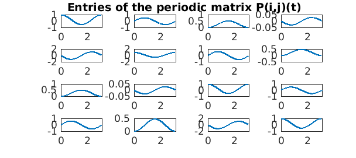
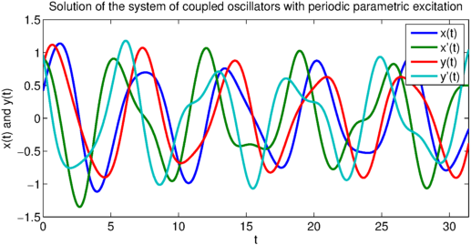

clear all; LW = 'linewidth'; lw = 2.0;
Floquet theory
Consider the $n$-dimensional linear system of ordinary differential equations:
$$ \dot{x}(t) = A(t) x(t), $$
where in addition, the matrix $A(t)$ is periodic with period $T$, i.e. $A(t+T) = A(t)$ for all real values of $t$. Let $\Phi(t)$ denote the principal fundamental matrix solution such that the columns of $\Phi(t)$ are linearly independent, and $\Phi(0) = I$. Then, Floquet's theorem decomposes the principal fundamental matrix as the product of a periodic matrix $P(t)$ with period $T$ and an exponential matrix $e^{t B}$ [1,2]. That is:
$$ \Phi(t) = P(t)e^{t B}. $$
Floquet theory is widely used in the analysis of stability of dynamical systems, including the Mathieu equation and Hill's differential equation for approximating the motion of the moon.
Two coupled oscillators with periodic parametric excitation
Using Chebfun, we may calculate the matrices $P(t)$ and $B$. The eigenvalues $\rho_i$ of $e^{TB}$ are known as the Floquet multipliers, and the Floquet exponents are the non-unique numbers related by $\rho_i = e^{\mu_i T}$. In this example, we consider the system of two coupled oscillators with periodic parametric excitation [1, Exercise 2.91]:
$$ \ddot{x} + (1+a\cos 2t)x = y-x, $$
$$ \ddot{y} + (1+a\cos 2t)y = x-y. $$
We begin by finding the principal fundamental matrix by solving four initial value problems, since there are two variables and the problem is of second order.
T = pi; d = [0,T]; a = 0.15;
A = chebop(d);
A.op = @(t,x1,x2,y1,y2) [diff(x1)-x2;
diff(x2)-y1+(2+a.*cos(2*t)).*x1;
diff(y1)-y2;
diff(y2)-x1+(2+a.*cos(2*t)).*y1];
A.lbc = @(x1,x2,y1,y2) [x1-1;x2;y1;y2];
Phi = A\0;
A.lbc = @(x1,x2,y1,y2) [x1;x2-1;y1;y2];
Phi = [Phi A\0];
A.lbc = @(x1,x2,y1,y2) [x1;x2;y1-1;y2];
Phi = [Phi A\0];
A.lbc = @(x1,x2,y1,y2) [x1;x2;y1;y2-1];
Phi = [Phi A\0];
Having solved for the principal fundamental matrix for one period, we may calculate the matrix $B$ via the matrix logarithm:
[n,n1]=size(Phi);
PhiT = zeros(n);
for i = 1:n
for j = 1:n
PhiT(i,j) = Phi{i,j}(T);
end
end
B = logm(PhiT)/T;
Warning: Principal matrix logarithm is not defined for A with nonpositive real eigenvalues. A non-principal matrix logarithm is returned.
This warning reveals something genuine and interesting. Over on period, one or more eigenvalues of the fundamental matrix at the end of the period $\Phi(T)$ may become negative. Therefore, the matrix logarithm returns complex results. One could avoid the complex arithmetic by solving over two periods [2], which is not explored here.
The Floquet exponents are given by the eigenvalues of the matrix B:
[V,D] = eig(B);invV = eye(n)/V; Exponents = diag(D)
Exponents = 0.000000000000003 - 0.268354690531905i 0.000000000000003 + 0.268354690531904i 0.037475319732291 + 1.000000000000000i -0.037475319732286 + 1.000000000000000i
And the Floquet multipliers are given by the exponential of the Floquet exponents multiplied by the period T:
Multipliers = exp(diag(D)*T)
Multipliers = 0.665180257006666 - 0.746682814646595i 0.665180257006668 + 0.746682814646594i -1.124942799147944 - 0.000000000000001i -0.888934086921964 + 0.000000000000001i
We can build the chebmatrix exponential $e^{-tB}$ and use this to find the periodic matrix $P(t)$:
t = chebfun('t',d);
expmB = [zeros(1,0) exp(-t*D(1,1)) zeros(1,n-1)];
for i = 2:n
expmB = [expmB ; zeros(1,i-1) exp(-t*D(i,i)) zeros(1,n-i)];
end
expmB = V*expmB*invV;
P = zeros(n)*Phi;
for i = 1:n
for j = 1:n
temp = Phi{i,1}.*expmB{1,j};
for k = 2:n
temp = temp + Phi{i,k}.*expmB{k,j};
end
P(i,j) = chebfun(@(t) temp(t), d, 'periodic');
end
end
Warning: Vertical concatenation of CHEBFUN objects now produces a CHEBMATRIX The V4 behaviour can be reproduced using the JOIN() method.
The periodicity of $P(t)$ is numerically confirmed by the construction of entries $P(i,j)(t)$ with the periodic flag, which would otherwise fail. The entries of the periodic solution are plotted below:
for i = 1:n
for j = 1:n
subplot(n,n,n*(i-1)+j)
plot(real(P{i,j}),LW,lw)
set(gcf,'NextPlot','add');
axes;
h = title('Entries of the periodic matrix P(i,j)(t)');
set(gca,'Visible','off');
set(h,'Visible','on');
end
end

With the matrix $B$ and the periodic matrix $P(t)$, we can construct the solution with any initial conditions for as long as we want!
t = chebfun('t',10*d);
expmB = [zeros(1,0) exp(t*D(1,1)) zeros(1,n-1)];
for i = 2:n
expmB = [expmB ; zeros(1,i-1) exp(t*D(i,i)) zeros(1,n-i)];
end
expmB = V*expmB*invV;
We multiply the matrix exponential with random initial conditions:
x0 = rand(n,1);
temp = expmB{1,1}.*x0(1);
for i = 2:n
temp = [temp expmB{i,1}.*x0(1)];
end
for i = 1:n
for j = 2:n
temp(:,i) = temp(:,i) + expmB{i,j}.*x0(j);
end
end
Then, we obtain the solution by further mulitplying by the periodic matrix $P(t)$. Since $P(t)$ is periodic on $[0,T]$, there is no problem sampling it on a larger interval, unlike aperiodic chebfuns.
xsol = chebfun(@(t) P{1,1}(t), 10*d).*temp(:,1);
for i = 2:n
xsol = [xsol chebfun(@(t) P{i,1}(t), 10*d).*temp(:,1)];
end
for i = 1:n
for j = 2:n
xsol(:,i) = xsol(:,i) + chebfun(@(t) P{i,j}(t), 10*d).*temp(:,j);
end
end
The solutions can then be plotted below:
clf, plot(real(xsol), LW, lw)
xlabel('t'), ylabel('x(t) and y(t)')
title('Solution of the system of coupled oscillators with periodic parametric excitation')
legend('x(t)', 'x''(t)', 'y(t)', 'y''(t)')

References
-
Chicone, C. Ordinary Differential Equations with Applications (Texts in Applied Mathematics 34) Springer, second edition, (2006).